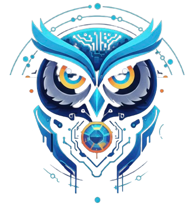

Corroboration
Combine checks with boolean AND/OR groups. An alert fires only when independent signals agree — e.g. (TCP AND HTTP) OR PING. Groups nest and compose; across groups the logic is OR.

BEKCIWATCHMAN · BEKÇIBekci diagrams your alert logic — corroborate independent checks, require sustained failure, and page on-call only when the design says it's real.
Every check is plotted on two clocks at once. The 4-hour strip shows the last 48 five-minute windows — what's happening right now. The 90-day strip shows 90 daily windows — the reliability trend behind it. Read the incident and the pattern in a single glance.
The same measure, two resolutions. The tactical strip resolves a live incident down to a 5-minute cell; the strategic strip keeps 90 days of daily uptime so a recurring pattern can't hide inside a "good enough" monthly average.
Most uptime monitors fire on a single failed check. Bekci demands corroboration and sustained failure — driving false positives toward zero. Here's the condition logic, diagrammed.
Combine checks with boolean AND/OR groups. An alert fires only when independent signals agree — e.g. (TCP AND HTTP) OR PING. Groups nest and compose; across groups the logic is OR.
A condition must fail N times within a fail window before it counts as down. A single blip is ignored. Window minimum = fail_count × interval.
Per-rule alert cooldown, a configurable re-alert interval for still-firing issues, and a recovery cooldown — so a flapping target can't spawn an alert storm.
Each check evaluates field · comparator · value — a status-code match, a DNS record value, cert days-remaining, a page-hash change — and composes into the AND/OR groups above.
Reachability, round-trip time and packet loss.
Expected status code, endpoint path and custom port.
Port connect — is the socket accepting?
Resolve host; optional expected value, record type and nameserver.
Hashes the response body to detect defacement or unexpected change.
Certificate expiry — warn N days ahead of the deadline.
sysUpTime, sysDescr, best-effort CPU and memory.
Same signals with authPriv / authNoPriv / noAuthNoPriv.
Everything an operator needs to run monitoring as a controlled system — not a noisy inbox.
A flat status page for a security-operations display — optionally public.
Per-category SLA thresholds with 90-day daily-uptime charts.
Three roles — admin / operator / viewer. JWT in an HttpOnly cookie, bcrypt.
Email (Resend / Microsoft 365), Signal, or a generic JSON webhook to SOAR & Slack. Recovery notices carry downtime duration.
Full DB snapshot with optional AES-256-GCM (Argon2id, diceware passphrase). Config + full-DB restore.
A scheduler-heartbeat dead man's switch — the monitor watches itself and alerts if it stalls.
A full trail of every admin and operator action, with server-side search.
Login brute-force protection with ban detail on the security surface.
A single Go binary with the Vue 3 UI embedded, SQLite for storage, Docker-first. Clone, compose up, open the port.
Pull the source from GitHub — github.com/okoker/bekci.
One container builds and starts in the background. No external services to wire up.
Browse to http://localhost:65000 and start adding checks.
# clone, then bring up one container
$ git clone https://github.com/okoker/bekci.git
$ cd bekci
$ docker compose up -d
# then open http://localhost:65000One container. One binary. One port. Open http://localhost:65000 — MIT-licensed, self-hosted, yours.